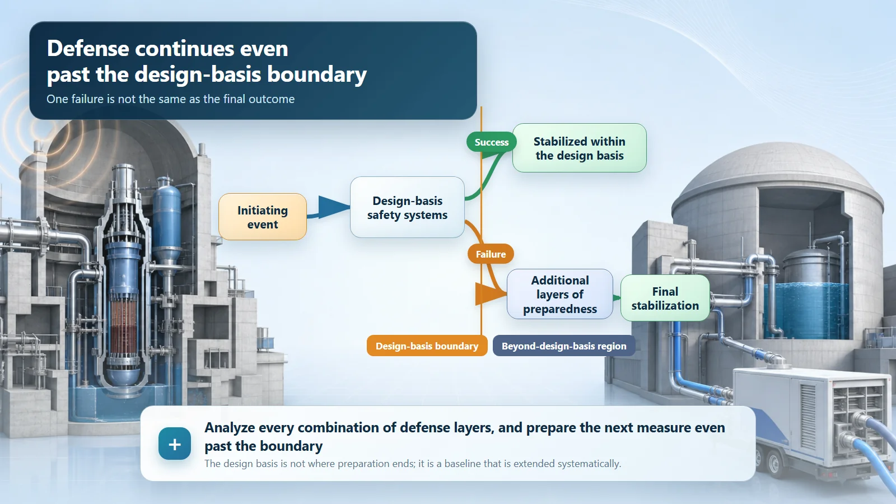
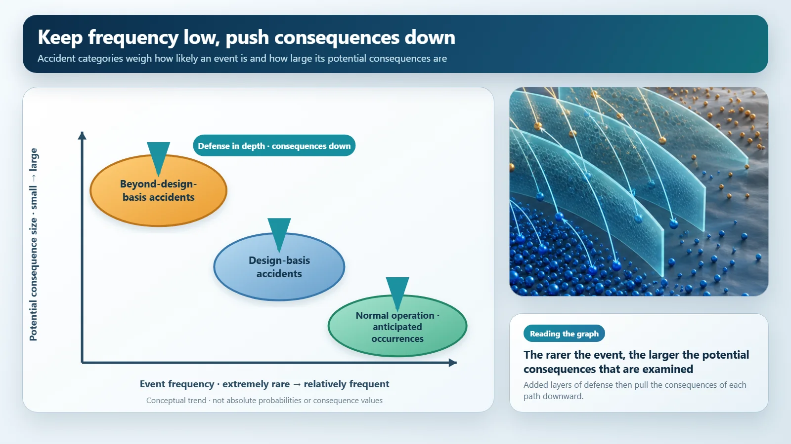

Safety Principles & Accident Analysis · 206
Studying Past the Syllabus — What a Beyond-Design-Basis Accident Really Means
Nuclear plants draw a line they must withstand, then prepare for what lies beyond it anyway. Beyond the design basis never means unprepared.
A beyond-design-basis accident is an accident more severe than the range a nuclear plant is designed to withstand. It is far less likely than a design-basis accident, but its likelihood is never treated as zero, and further layers of preparedness exist beyond the design-basis line. "Beyond the design basis" never means "not prepared for."
The question from outside the syllabus
Remember the week before an exam, when the teacher said, "The test covers chapters three through seven"? Most of us studied exactly those chapters. But the really diligent students finished the syllabus and then took a quick look past it, just in case one question strayed outside. The teacher had clearly said nothing else would be on the test. Odd behavior, isn't it?
Nuclear plant designers work exactly like those diligent students. They draw a line that says "the plant must withstand everything up to here," and then they prepare separately for situations that go past that line. The beyond-design-basis accident is the nuclear version of the question from outside the syllabus.
First, the syllabus: the design basis
Every nuclear plant has a design basis. Put simply, it is the range of accidents and events that the plant is required to withstand and bring under control safely, fixed at the design stage as the things it must be prepared for. In exam terms, it is the announced syllabus. Accidents that fall inside this range are called design-basis accidents: for example, coolant escaping from the reactor system, or a pipe that carries steam bursting. These accidents are built into the design from the start, so that the plant's safety systems can handle them with ample safety margin.
Why draw a boundary at all? Because you cannot prepare for every conceivable event with equal weight. If you demanded that the plant "must withstand" even extremely rare events in exactly the same way, effort would be spread thin and pulled away from risks that are more likely. So engineers weigh two things together, how often something could happen and how large the consequences would be if it did, and draw a reasonable line around the core range that must be covered. That line is the design basis.
Crossing the line
A beyond-design-basis accident is, quite literally, an accident that goes past that line. Picture several safety systems all failing to do their job at the same time: a situation more severe than anything the design treated as the mandatory range to cover. It is the exam question from outside the syllabus.
Two points are worth holding on to. First, such an accident is far less likely than a design-basis accident. Second, that likelihood is still not treated as exactly zero. However small the probability, the consequences could be larger, so a low probability alone is never a reason to stop preparing. That is the stance modern nuclear safety takes.

"Beyond design basis" does not mean "unprepared"
It is easy to think a beyond-design-basis accident is one nobody prepared for, an accident where everyone has simply given up. That is not the case at all. "Beyond the design basis" means outside the mandatory range the plant was designed to withstand. It does not mean "nothing comes after this."
In fact, further layers of preparedness sit beyond that line. Designers assume the worst case, even one where several layers of safety systems have all been breached, and put separate response measures and procedures in place to stop the accident from getting worse and to reduce its consequences as far as possible. The idea of stacking protection in layers, so that when one layer is breached the next one holds, is called defense in depth, and preparation for beyond-design-basis accidents is its outermost layer. The exact measures, and how they map onto numbered defense-in-depth levels, are described differently by different countries, regulators and periods, so this article stays at the level of the concept.
One more term. Among beyond-design-basis accidents, the especially serious cases in which the reactor core is heavily damaged are called severe accidents. So a beyond-design-basis accident is not automatically a severe accident; severe accidents are the more serious subset inside that category.
Keep the odds low, push the consequences down
This concept sits on two yardsticks: how often something happens, and how big the consequences would be if it did. Fairly plausible events near normal operation, such as anticipated operational occurrences, are managed so that their consequences stay small. Design-basis accidents are rarer than that, and beyond-design-basis accidents are rarer still. The further along you go, the larger the potential consequences could become, and that is exactly where the multiple layers of defense in depth go to work, pressing the consequences downward.

| Category | How likely | How it is handled |
|---|---|---|
| Anticipated operational occurrences | May happen fairly often | Consequences kept small |
| Design-basis accidents | Rare | The design must cover them, with safety margin |
| Beyond-design-basis accidents | Far rarer | Additional layers of preparedness |
| Severe accidents (subset) | Rarest, most serious | Outermost layers of defense in depth |
The further along the spectrum, the lower the likelihood, and the deeper the preparation goes, one layer at a time.
Key takeaways
The design basis is the range of accidents and events the plant is designed to withstand; a beyond-design-basis accident goes past that line. It is far less likely, but not treated as impossible, and further layers of preparedness, the outermost layer of defense in depth, stand beyond it. Severe accidents, with heavy core damage, are a subset of beyond-design-basis accidents, not another name for them. Behind the stiff name is the mindset of a student who studies past the syllabus.